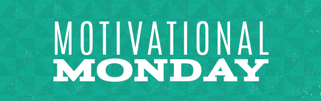

I’m a 25 year old student who enjoys a relatively healthy lifestyle. I don’t in any way claim to be a fitness expert or personal trainer but there is several things I’ve learned over the past couple of years of training and eating “clean” which I hope to share with you.

The most common New Years Resolution people tend to make is to “lose weight” or “get fit and healthy” . Although they are taking steps in the right direction, these vows often fall into a whole host of things most of us will not follow through on. We tend to over commit to going to the gym 6/7 days a week and starve ourselves in an effort to lose those those extra Christmas dinner pounds which results in us burning out and giving up within the first few weeks. I believe the key to success is based on BALANCE.
Balance
As a college student, I understand full well the importance of the social aspect of the college life and the positive impact it has on your mental health. That being said, drinking and partying is fun but it has an ill effect on our physical well being. We must ensure to not let either aspect run our life completely. I found that balancing my training and social life leads to a happier, more fulfilled version of myself. This might involve voluntarily missing out on an average Saturday night out because you plan to train on Sunday morning but simultaneously making a conscious effort to be there for our friend’s events.
Balancing a healthy lifestyle with other various aspects in life isn’t easy, especially when many things people do for “fun” contradict living a healthy life. It’s vital for us to set goals and prioritise what we find most important in life, whether it be friends, family or fitness. Do what it is that makes you a happier version of yourself, drink beer, train hard, enjoy life and be happy.